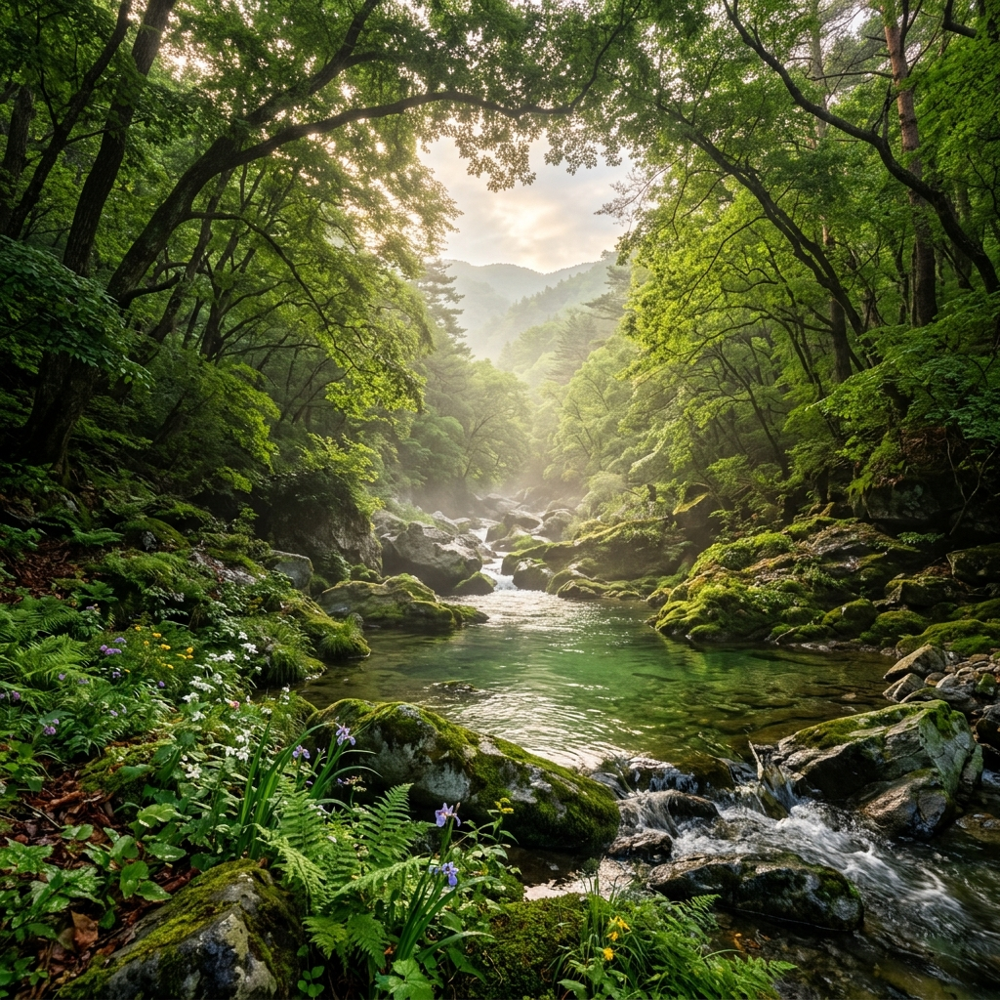
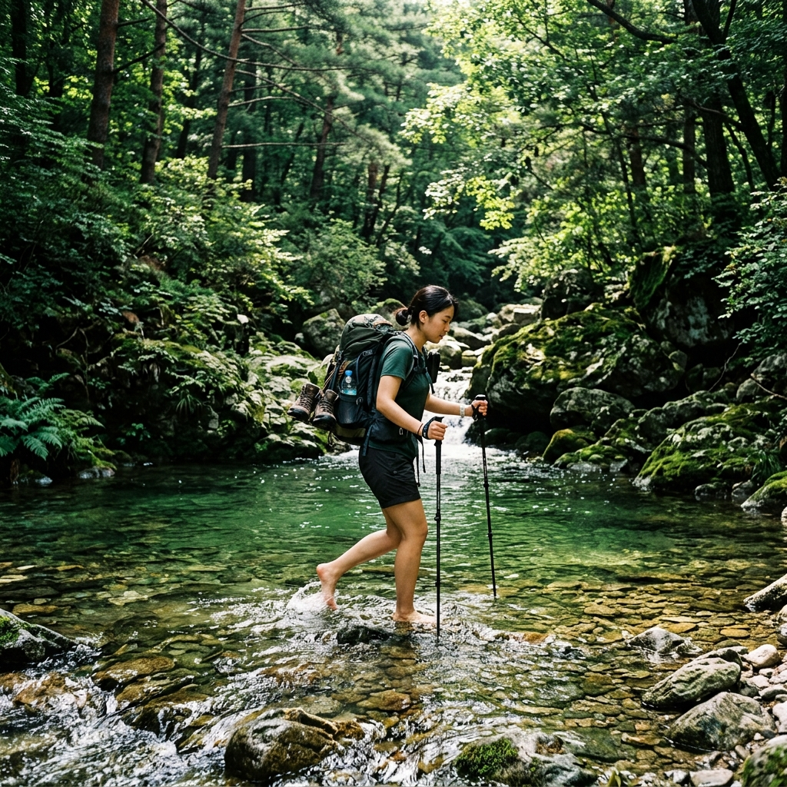
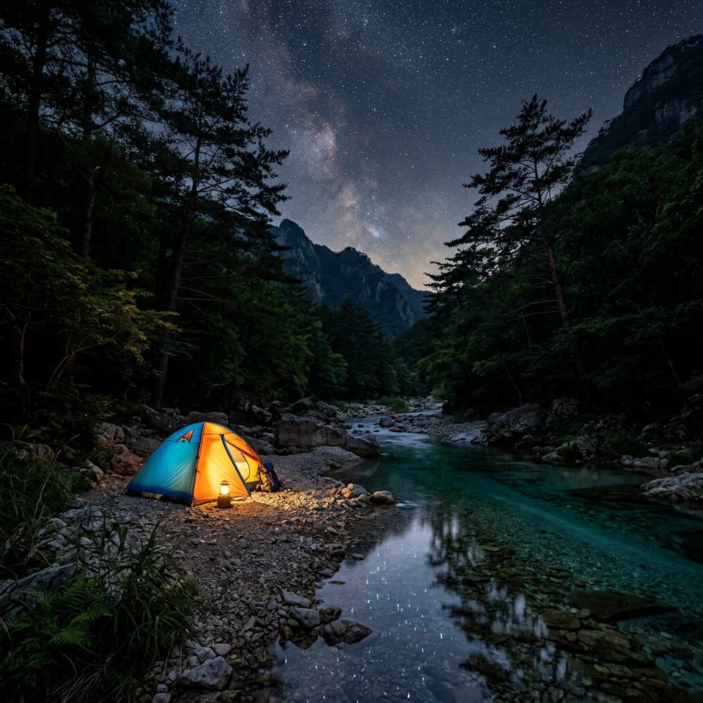

삼척 덕풍계곡, 응봉산 원시림 속 용소와 물돼지소 6월 트레킹
강원도 삼척 깊숙한 가곡면 풍곡리, 응봉산(998.5m) 자락을 따라 흐르는 덕풍계곡은 아직도 많은 사람들에게 낯선 이름입니다. 포장도로가 닿지 않는 험준한 진입로, 도하(渡河)를 반복해야 닿는 신비로운 웅덩이들, 그리고 인간의 손길이 거의 닿지 않은 원시림의 기운까지—덕풍계곡은 대한민국에서 가장 원초적인 계곡 트레킹 코스 중 하나로 손꼽힙니다.
6월이 되면 계곡 주변 원시림이 짙은 초록으로 물들고, 겨우내 쌓였던 눈 녹은 물이 마침내 적당한 수량으로 안정되면서 탐방 최적기를 맞이합니다. 용소(龍沼)의 에메랄드빛 물빛, 물돼지소의 아늑한 비경, 그리고 계곡 곳곳에 드리운 원시림 그늘이 여름 더위를 잊게 만듭니다.
이 글에서는 삼척 덕풍계곡의 생성 배경부터 트레킹 코스 상세 안내, 안전 주의사항, 주변 연계 여행지까지 꼼꼼하게 정리해 드립니다. 처음 방문하시는 분들도, 다시 찾으시는 분들도 이 글 하나로 완벽하게 준비하실 수 있습니다.
1. 덕풍계곡, 강원도 최후의 비밀 원시 계곡
덕풍계곡은 강원도 삼척시 가곡면 풍곡리에 위치한 계곡으로, 행정구역상 삼척시 최북단에 해당합니다. 인근 태백산맥 줄기의 응봉산(998.5m)에서 발원한 물줄기가 좁고 깊은 협곡을 따라 흘러내리며 빚어낸 절경이 바로 이 계곡의 정수입니다.
덕풍계곡이 "비밀 계곡"으로 불리는 데는 이유가 있습니다. 진입 자체가 쉽지 않습니다. 삼척 시내에서 38번 국도를 타고 가곡면 방향으로 40분 이상 이동한 뒤, 비포장 산길을 따라 덕풍마을까지 들어서야 합니다. 이 비포장 구간은 노면이 매우 거칠고 폭이 좁아, 일반 승용차보다는 SUV나 사륜구동 차량을 강하게 권장합니다.
덕풍마을 주차장에 차를 세우고 나면, 본격적인 계곡 트레킹이 시작됩니다. 코스 전체 길이는 왕복 약 8km, 소요 시간은 3~4시간 수준입니다. 그러나 단순한 숫자가 난이도를 대변하지는 않습니다. 구간 곳곳에서 계곡을 직접 건너야(도하) 하기 때문에, 일반 등산화로는 발이 젖을 수밖에 없습니다. 물놀이화 또는 아쿠아슈즈는 필수 준비물입니다.
계곡 양옆으로는 수령 수백 년에 달하는 느티나무, 참나무, 단풍나무가 하늘을 가릴 만큼 빽빽하게 들어서 있습니다. 사람의 손길이 거의 닿지 않은 원시림이라 식생이 매우 다양하고 풍요롭습니다. 각종 희귀 야생화와 이끼가 계곡 바위를 뒤덮고 있어, 걷는 내내 자연 다큐멘터리 속 장면이 펼쳐집니다.
전국에서 트레킹 마니아들이 일부러 찾아올 만큼 인지도가 높아졌지만, 그럼에도 여전히 접근성이 낮아 호젓한 탐방이 가능합니다. 복잡한 관광지에서 벗어나 진짜 자연을 만나고 싶은 분들께 덕풍계곡은 단연코 최고의 선택지 중 하나입니다.

원시림으로 둘러싸인 덕풍계곡 전경 / AI 제작 이미지
2. 응봉산의 숨결 — 계곡 생성 배경
덕풍계곡을 이해하려면 그 모태가 된 응봉산을 먼저 알아야 합니다. 응봉산(鷹峰山, 998.5m)은 강원도 삼척시와 경북 울진군 경계에 자리한 산으로, 이름처럼 매(鷹)가 날개를 펼친 듯 웅장한 산세를 지니고 있습니다.
이 산에서 발원한 물줄기는 급경사 지형을 따라 빠르게 아래로 흘러내립니다. 오랜 세월 동안 물줄기가 암반을 깎아 내리면서 좁고 깊은 협곡 지형이 만들어졌고, 그 결과물이 오늘날 우리가 보는 덕풍계곡입니다. 지질학적으로는 선캄브리아기 편마암과 화강암이 뒤섞인 복잡한 구조를 가지고 있어, 계곡 곳곳에 다양한 색과 형태의 암반이 드러납니다.
계곡을 따라 형성된 여러 개의 소(沼, 깊은 웅덩이)는 물줄기가 낙차 구간을 지나면서 바닥을 깊게 파낸 결과입니다. 특히 용소와 물돼지소는 수심이 상당히 깊고, 물이 투명해 바닥까지 훤히 보이는 에메랄드 빛깔로 유명합니다. 이러한 웅덩이는 여름에는 최고의 천연 수영장이 되기도 합니다.
응봉산 일대 산림은 강원도 내에서도 손에 꼽히는 원시림 보존 지역입니다. 산림청에서 보호구역으로 지정·관리하고 있어, 무분별한 개발이 제한되어 있습니다. 덕분에 수백 년 수령의 고목들이 그대로 살아있고, 반달가슴곰, 담비, 삵 등 멸종위기 야생동물의 서식처로도 기능합니다.
응봉산 정상에서는 동해 바다까지 시야가 트이는 장관을 볼 수 있습니다. 덕풍계곡 트레킹 후 체력이 남는다면, 응봉산 정상까지 오르는 코스를 추가하는 것도 훌륭한 선택입니다. 단, 계곡 코스와 합산하면 하루 일정이 매우 빡빡해지므로 사전에 충분한 체력 비축이 필요합니다.
3. 6월 덕풍계곡, 최고의 탐방 시기
덕풍계곡은 연중 아무 때나 방문할 수 있지만, 탐방 적기를 꼽으라면 단연 6월부터 8월까지의 여름입니다. 이 시기에 방문해야 하는 이유는 크게 세 가지입니다.
첫째, 수량이 가장 안정됩니다. 봄 해빙기(3~5월)에는 눈 녹은 물이 한꺼번에 밀려내려 계곡 수위가 높고 유속이 빨라 도하가 위험합니다. 반면 6월 초가 되면 수위가 안정되고 유속도 적당해져 안전하게 건널 수 있습니다. 계곡물이 무릎 높이 전후가 되면 탐방 최적 상태입니다.
둘째, 원시림이 절정의 녹음을 뽐냅니다. 6월 덕풍계곡 숲은 모든 나무가 완전히 잎을 펼쳐 짙은 캐노피를 형성합니다. 계곡 바닥까지 내리쬐는 햇빛이 에메랄드빛 물에 반사되어 만들어내는 광경은 그야말로 압도적입니다. 물과 숲이 함께 빚어내는 이 그림 같은 경치는 다른 계절에는 경험할 수 없습니다.
셋째, 기온이 적당해 장거리 트레킹이 가능합니다. 7~8월의 한여름 폭염기와 달리 6월은 아직 기온이 크게 오르지 않아 체력 소모가 적습니다. 계곡 안은 숲 그늘 덕분에 바깥보다 기온이 2~3도 낮게 유지되어 더욱 쾌적합니다.
다만 6월은 장마 전선이 이동하는 시기이기도 합니다. 비가 내린 직후나 장마 기간에는 수위가 급격히 상승하여 탐방이 매우 위험해질 수 있습니다. 방문 전 반드시 기상 예보를 확인하고, 강수 예보가 있다면 일정을 조정하는 것이 안전합니다. 맑은 날 아침 일찍 출발하는 것이 가장 이상적입니다.
4. 덕풍계곡 트레킹 코스 상세 안내
덕풍계곡 트레킹의 시작점은 풍곡리 덕풍마을 주차장입니다. 주차장에서 계곡을 따라 올라가다 보면 탐방로 입구 안내판이 나옵니다. 코스는 기본적으로 계곡을 따라 직선으로 올라갔다가 같은 길을 되돌아오는 왕복 형태입니다.
0~1km 구간은 탐방로가 비교적 잘 정비되어 있어 걷기 편합니다. 계곡 옆으로 완만한 숲길이 이어지며, 나무 데크와 안전 난간이 설치된 구간도 있습니다. 계곡 소리를 들으며 워밍업하기 좋은 구간입니다.
1~2.5km 구간부터 본격적인 도하가 시작됩니다. 계곡이 좁아지면서 탐방로와 계곡이 교차하는 지점이 여러 곳 나옵니다. 평상시 수위에서는 무릎 이하 깊이이지만, 바닥이 미끄럽고 물살이 있으므로 트레킹 폴(스틱)을 활용하면 안전합니다. 이 구간에서 처음으로 크고 아름다운 소(沼)들을 만나기 시작합니다.
2.5~4km 구간이 하이라이트입니다. 먼저 물돼지소를 만나고, 조금 더 오르면 용소에 도착합니다. 용소는 코스의 사실상 종점이자 목적지로, 대부분의 탐방객이 이곳에서 도시락을 먹고 물에 발을 담그며 휴식을 취한 뒤 되돌아갑니다. 용소 위쪽으로도 계곡은 계속되지만, 탐방로가 급격히 험해지므로 초보자는 여기서 하산하는 것이 적당합니다.
전체 소요 시간은 평균 3~4시간이지만, 사진 촬영과 휴식을 충분히 취하면 5~6시간이 걸릴 수도 있습니다. 물과 간식을 충분히 챙기고, 늦어도 오후 2시 이전에는 하산을 시작하는 것이 좋습니다.

계곡 도하 장면 — 덕풍계곡 트레킹의 묘미 / AI 제작 이미지
5. 용소 — 에메랄드빛 신비의 웅덩이
용소(龍沼)는 덕풍계곡 트레킹의 최종 목적지이자 가장 유명한 포인트입니다. 이름 그대로 용이 살았다는 전설이 내려오는 깊은 웅덩이로, 직경은 약 20m, 수심은 가장 깊은 곳이 6~8m에 이른다고 알려져 있습니다.
용소의 가장 큰 특징은 물빛입니다. 청록색과 에메랄드 그린이 섞인 듯한 투명한 물빛은 보는 각도와 시간대에 따라 색감이 조금씩 달라집니다. 오전 햇빛이 들어올 때는 연한 민트빛을, 한낮에는 짙은 에메랄드를, 흐린 날에는 묘한 청회색을 띱니다. 탐방객들이 이 물빛을 보기 위해 멀리서 일부러 찾아올 정도입니다.
용소 주변 절벽은 수직에 가까운 암벽으로 이루어져 있고, 그 틈에 이끼와 고사리류가 풍성하게 자라고 있습니다. 절벽 위에서 내려다보는 용소의 모습은 탐방로에서 보는 것과 또 다른 장관을 연출합니다. 용소 위쪽으로 작은 폭포가 있어 물소리까지 더해지면 신비로운 분위기가 절정에 달합니다.
여름철에는 용소에서 수영을 즐기는 탐방객들도 있지만, 몇 가지 주의사항을 반드시 숙지해야 합니다. 수심이 깊고 바닥 형태가 불규칙하여 사고 위험이 있습니다. 구명조끼 없이 깊은 부분으로 진입하는 것은 삼가야 합니다. 또한 수온이 한여름에도 상당히 낮기 때문에, 갑작스러운 냉수 충격으로 근육 경련이 생길 수 있습니다. 반드시 준비 운동 후 얕은 곳에서부터 천천히 몸을 적응시키며 즐기시기 바랍니다.
용소 근처에는 너른 바위 평지가 있어 탐방객들이 도시락을 펼치고 휴식을 취하기 좋습니다. 이곳에 앉아 계곡 소리와 새소리를 들으며 원시림의 공기를 마시는 시간은 그 어떤 고급 휴양지와도 비교할 수 없는 경험입니다.
6. 물돼지소 — 계곡 깊숙이 숨겨진 절경
용소보다 약 500m 앞쪽(하류 방향)에 위치한 물돼지소는 용소에 비해 규모는 작지만, 아늑하고 비밀스러운 분위기로 마니아들 사이에서 오히려 더 사랑받는 명소입니다. 정확한 이름의 유래는 알려져 있지 않지만, 웅덩이 바닥에 크고 둥근 바위가 있어 물속에서 돼지처럼 보인다는 이야기, 또는 예전에 산돼지가 이 웅덩이에서 물을 마셨다는 이야기가 전해집니다.
물돼지소의 수심은 용소보다 얕아 2~4m 수준이며, 물빛은 더욱 투명하여 바닥의 자갈과 암반이 선명하게 보입니다. 웅덩이 한쪽은 계단식으로 쌓인 자연 암반이 마치 좌석처럼 펼쳐져 있어, 발을 담그고 쉬기에 더없이 좋습니다. 물이 워낙 맑아 여름에도 시각적으로 시원함이 느껴집니다.
물돼지소 주변의 암반 위에는 이름 모를 야생화들이 피어나고, 계곡 위쪽으로 작은 물줄기가 여러 갈래로 나뉘어 내려오는 독특한 경관이 펼쳐집니다. 이 물줄기가 웅덩이로 합류하는 부분에서는 물소리가 유달리 청아하게 울려 퍼집니다.
탐방 시 물돼지소에서 먼저 짧게 쉬며 간식을 보충하고, 이후 용소까지 오르는 방식을 권장합니다. 돌아오는 길에는 물돼지소에서 발을 담그며 피로를 회복하는 것이 체력 안배에 효과적입니다. 특히 6월 초 평일 방문 시에는 물돼지소 전체를 혼자 독차지하는 호사를 누릴 수도 있습니다.
사진을 찍는다면 물돼지소에서 오전 10~11시 사이가 가장 좋습니다. 이 시간대에 계곡 위쪽에서 햇빛이 직접 들어와 물빛이 가장 밝고 투명하게 빛납니다. 폰 카메라의 광각 모드를 활용하면 웅덩이 전체와 주변 숲을 함께 담을 수 있습니다.
7. 야영과 캠핑 — 원시 자연 속 하룻밤
덕풍계곡에서는 계곡 야영이 가능합니다. 덕풍마을 입구 주변에 야영 공간이 마련되어 있으며, 사전 예약이나 입장료 없이 이용할 수 있는 비지정 야영 구역도 있습니다. 다만 쓰레기 무단 투기 금지, 취사 시 지정 구역 이용 등 기본 에티켓은 반드시 지켜야 합니다.
야영을 선택하면 당일 트레킹으로는 느낄 수 없는 또 다른 덕풍계곡을 경험할 수 있습니다. 해가 지고 사람들이 빠져나가면 계곡은 완전한 정적과 함께 오롯한 자연 소리만 남습니다. 계곡 물소리, 바람 소리, 숲속 새와 곤충의 합창이 어우러진 밤의 원시림은 낮과 전혀 다른 분위기를 자아냅니다.
야영 시 텐트는 바닥이 평평하고 배수가 잘 되는 위치를 골라야 합니다. 계곡 바로 옆 자갈밭은 바닥이 고르지 않지만 물소리를 가장 가까이에서 들을 수 있다는 장점이 있습니다. 한여름에도 밤에는 기온이 뚝 떨어지므로 경량 방한 재킷이나 침낭 라이너를 꼭 챙겨야 합니다. 6월 평균 야간 기온은 10~15도 수준입니다.
야영 시 특히 주의할 사항은 기상 변화입니다. 덕풍계곡은 협곡 지형이라 상류에서 비가 오면 수위가 매우 빠르게 상승합니다. 인근 지역에 강수 예보가 있다면 계곡변 야영은 반드시 피해야 합니다. 야영 전날 밤, 그리고 새벽에도 날씨 앱을 확인하는 습관을 들이세요.
화장실은 덕풍마을 입구 공중화장실이 유일하므로, 야영 장소에서 거리가 멀 경우 이동에 불편을 감수해야 합니다. 조명은 헤드램프를 별도로 챙기는 것이 필수입니다. 전기가 들어오지 않는 완전한 오지 환경임을 미리 인지하고 방문하세요.

덕풍계곡 야영의 밤 — 원시 자연과 함께하는 하룻밤 / AI 제작 이미지
8. 반드시 알아야 할 안전 주의사항
덕풍계곡은 매력적인 만큼 위험 요소도 큰 곳입니다. 매년 여름마다 사고 소식이 전해지는 이유는, 험한 지형과 원시적 환경에 대한 이해 없이 무방비로 방문하는 경우가 많기 때문입니다. 다음 주의사항을 반드시 숙지하고 방문하세요.
첫째, 기상 확인이 최우선입니다. 덕풍계곡은 협곡 지형으로 탈출로가 거의 없습니다. 상류 어딘가에 비가 내리면 계곡 수위가 30분~1시간 내에 급격히 올라가는 돌발 홍수가 발생할 수 있습니다. 방문 당일뿐 아니라 전날 날씨, 강원도 전체 강수 상황을 함께 체크하세요. 비 소식이 조금이라도 있다면 탐방을 미루는 것이 현명합니다.
둘째, 혼자 방문은 삼가야 합니다. 계곡 내 통신이 거의 되지 않는 음영 지역이 많아 사고 발생 시 구조 요청이 어렵습니다. 최소 2인 이상, 가능하면 3인 이상이 함께 방문하는 것을 권장합니다.
셋째, 장비를 제대로 갖춰야 합니다. 아쿠아슈즈 또는 물놀이화, 트레킹 폴(2개), 여분 의류, 비상식량, 충분한 물, 구급약, 완전히 충전된 보조 배터리가 필수입니다. 일반 운동화나 슬리퍼로 방문하면 발이 미끄러운 바위에서 낙상 사고로 이어지기 쉽습니다.
넷째, 출발 시간을 지켜야 합니다. 늦어도 오전 9시 이전에는 출발하여, 오후 2시 이전 하산을 완료하는 일정을 짜야 합니다. 늦은 오후 갑작스러운 뇌우나 소나기가 빈번한 여름 계곡에서는 일정 여유가 생명을 지킵니다.
다섯째, 계곡 도하 시 반드시 서로 손을 잡거나 폴로 지지하며 건너야 합니다. 혼자 도하하다 미끄러지면 물에 휩쓸릴 수 있습니다. 어린이나 수영 미숙자는 깊은 구간 도하를 삼가고, 수위가 높다고 판단되면 무리하게 전진하지 마세요.
9. 삼척 주변 연계 명소 탐방
덕풍계곡까지 먼 길을 왔다면, 삼척 인근의 다른 명소들을 함께 둘러보는 것이 여행의 완성도를 높입니다. 삼척은 동해안에 접해 있어 계곡과 바다를 하루에 모두 즐길 수 있는 독특한 위치에 있습니다.
삼척 해수욕장과 장호항은 덕풍계곡 탐방 후 이동하기 좋은 곳입니다. 특히 장호항은 "한국의 나폴리"라고 불릴 만큼 아름다운 해안선을 자랑하며, 스노클링과 투명 카약 체험으로 유명합니다. 덕풍계곡에서 승용차로 약 40~50분 거리에 위치합니다.
환선굴·대금굴은 삼척의 대표적인 관광 명소입니다. 환선굴은 국내 최대 규모의 석회암 동굴로, 그 웅장함이 압도적입니다. 대금굴은 모노레일을 타고 접근하는 방식으로 색다른 경험을 제공합니다. 계곡 트레킹과 동굴 탐방을 함께하면 강원도 삼척의 자연 자원 다양성을 제대로 체험할 수 있습니다.
죽서루는 삼척 오십천 절벽 위에 세워진 관동팔경 중 하나로, 보물 제213호로 지정된 역사적 건축물입니다. 오십천의 굽이치는 물줄기를 배경으로 고즈넉하게 서있는 죽서루의 모습은 계곡 트레킹과는 또 다른 여행의 정취를 선사합니다.
삼척의 먹거리로는 곰치국과 물곰탕이 빠질 수 없습니다. 삼척 앞바다에서 잡히는 곰치(물메기)로 끓인 맑은 국은 시원하고 담백한 맛이 일품입니다. 계곡 트레킹으로 지친 몸과 마음을 달래기에 이만한 음식이 없습니다. 삼척 시내 재래시장 주변 식당가에서 어렵지 않게 찾을 수 있습니다.
10. 교통·주차·준비물 체크리스트
교통 및 접근 방법을 먼저 안내합니다. 삼척 덕풍계곡까지는 대중교통이 사실상 연결되지 않습니다. 자가용 방문이 필수이며, 앞서 언급한 대로 SUV 또는 사륜구동 차량을 강력히 권장합니다. 내비게이션에는 "강원 삼척시 가곡면 풍곡리 덕풍마을" 또는 "덕풍계곡"을 입력하시면 됩니다.
서울 출발 기준으로는 영동고속도로 → 동해고속도로 → 삼척 IC → 38번 국도 → 가곡면 방향으로 이동하며, 총 이동 시간은 약 3시간~3시간 30분 소요됩니다. 강릉이나 동해에서 출발하는 경우 1시간 30분~2시간이면 도착합니다. 풍곡리 입구부터는 비포장 도로가 시작되므로 속도를 줄이고 조심스럽게 운전하세요.
주차는 덕풍마을 입구 공터에 하며, 무료입니다. 성수기(7~8월)에는 이른 아침에도 주차 공간이 부족할 수 있으므로 오전 7~8시 이전 도착을 목표로 하세요. 불법 주차로 도로를 막을 경우 다른 차량의 진입을 방해하므로 삼가야 합니다.
필수 준비물 체크리스트를 최종 정리합니다. 아쿠아슈즈 또는 물놀이화(필수), 트레킹 폴 2개(강력 권장), 여분 의류(속옷 포함 젖은 옷 대비), 방수 백팩 또는 방수 팩, 생수 최소 2L 이상, 고칼로리 간식과 도시락, 비상 구급약(파스·지혈·붕대), 보조 배터리(휴대폰 충전용), 헤드램프(야영 또는 늦은 하산 대비), 썬크림과 모기 기피제를 반드시 챙기세요.
화장실은 덕풍마을 입구 공중화장실 이후 코스 내에 따로 없으므로 탐방 전 반드시 이용하세요. 쓰레기는 모두 개인이 되가져가는 것이 이 아름다운 원시 계곡을 지키는 가장 기본적인 예의입니다. 덕풍계곡의 자연이 오래도록 보전될 수 있도록 탐방객 모두의 협조가 필요합니다.
| 항목 | 내용 |
|---|
| 위치 | 강원도 삼척시 가곡면 풍곡리 덕풍마을 |
| 코스 거리 | 왕복 약 8km |
| 소요 시간 | 3~4시간 (여유 시 5~6시간) |
| 난이도 | 중급~상급 (도하 구간 포함) |
| 탐방 적기 | 6월~8월 |
| 주차 | 덕풍마을 입구 공터 (무료) |
| 서울 출발 소요 시간 | 약 3시간~3시간 30분 |
| 차량 권장 사항 | SUV 또는 사륜구동 차량 |
#삼척덕풍계곡
#덕풍계곡트레킹
#강원도계곡
#응봉산
#용소
#물돼지소
#원시림계곡
#6월트레킹
#삼척여행
#계곡야영